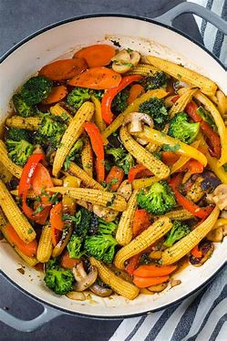

Veggie Stir Fry
A vibrant and healthy vegetable stir fry with soy sauce and garlic.
Veggie Burger

Delicious homemade veggie burger made with black beans and spices.
Vegetable Pasta
A simple and flavorful pasta dish with seasonal vegetables and olive oil.
Veggie Tacos
Fresh veggie tacos with a variety of colorful toppings and guacamole.
Grilled Vegetables
Perfectly grilled seasonal vegetables with a hint of garlic and lemon.